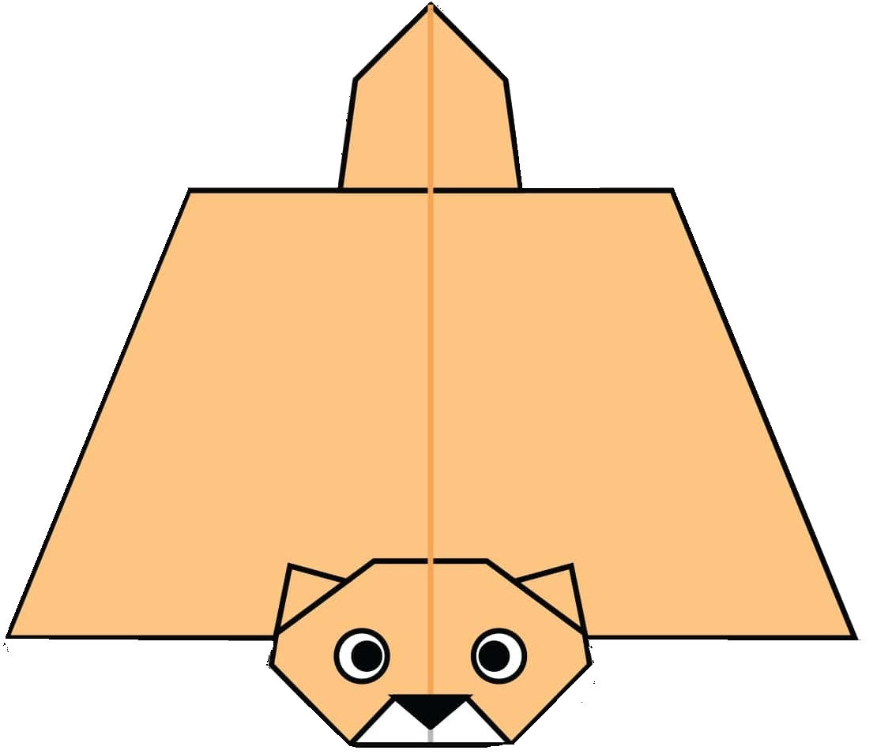

Some Important facts
1. The giant panda’s scientific name is Ailuropoda melanoleuca.
2. They have great camouflage for their environment.
3. Pandas sometime do handstands when they wee!
4. They like to keep it regular.
5. Pandas have carnivorous teeth, but they eat bamboo and fruit.

1. They Can Glow at Night.
2. Those Adorable Eyes Are for Night Vision.
3. They can glide 300 feets
4. Flying Squirrels Don't Hibernate, but They Do Hygge
5. 90% of All Flying Squirrel Species Exist Only in Asia.
Some Important Facts
1. They Can Glow at Night.
2. Those Adorable Eyes Are for Night Vision.
3. They can glide 300 feets
4. Flying Squirrels Don't Hibernate, but They Do Hygge
5. 90% of All Flying Squirrel Species Exist Only in Asia.